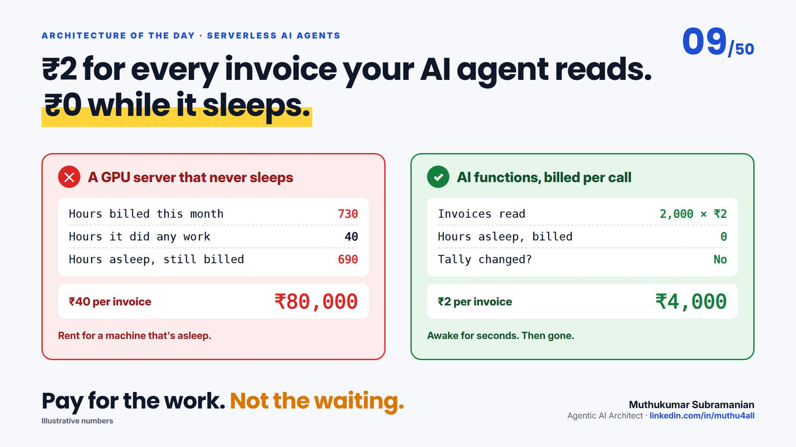

₹2 for Every Invoice Your AI Agent Reads. ₹0 While It Sleeps.
By Muthukumar Subramanian · Agentic AI Architect

A CA firm in Madurai reads 2,000 invoices a month. Nearly all of them land in the last week.
Someone sold them an AI setup with its own GPU server. It works well. For about 40 hours a month.
The other 690 hours, it sits in a data centre doing nothing, and the meter keeps running. ₹80,000 a month. That's ₹40 to read one invoice. (The firm and its numbers are illustrative. The maths is the point.)
The partner asked me a fair question: "Why am I paying rent for a machine that's asleep?"
The architecture today
Serverless flips the old deal. You don't rent a server. You upload a small function, and the cloud runs it only when something triggers it: a file arrives, a message comes in, a timer fires. When nothing's happening, nothing's running, and nothing's billed.
It's been around for more than a decade. Most back offices use it for dull jobs like resizing images and sending emails.
That dull old pattern happens to suit small AI work very well, because most AI work in a small business isn't constant. It comes in bursts: month-end, GST dates, Monday morning.
👉 [IMAGE: A-day09-2-in-article-architecture.png]
Caption: Small AI functions wake up when an invoice arrives, and go back to sleep. Tally stays exactly where it is. Grey is what you already have. Amber is new.
Where AI plugs in now: small functions, not one big server
Don't start with an always-on agent. Start with three tiny AI functions:
→ Read. A photo or PDF arrives on WhatsApp or email. The function pulls out the vendor, GSTIN, amount and date.
→ Classify. Which ledger, which tax head, is this a duplicate?
→ Check. Does the total add up, and does the vendor exist in the Tally export? Plain code does this part, not the model.
Each one wakes up, calls a model, finishes in seconds and disappears. The result lands in a review list, and a person approves it before anything goes into Tally. You've changed nothing in the old system. You've only added a side door.
For the model, you've got two choices. Call a pay-per-token API, or use a service that scales to zero, like Cloudflare Workers AI or Cloud Run with GPUs, so even an open model costs nothing while it's idle.
Where it's heading with agents
Small functions are becoming small agents. Each one will do one job, get paid per job and report back. A reconciliation agent wakes on the 20th. A notice-reading agent wakes when the tax portal mail arrives. A reminder agent wakes every Monday.
Today's serverless has an honest limit here, though. Agents wait. They wait for a human, a vendor, a slow ERP. A synchronous AWS Lambda call still stops at 15 minutes. That's why the clouds are adding durable options: Lambda's durable functions can now run for up to a year across pauses, and you don't pay for compute while they wait.
So in two or three years, I expect the small-business agent to look like this: asleep 99% of the time, awake for seconds, and billed like an electricity meter. The best AI employee is the one you don't pay while it's sleeping.
👉 [IMAGE: A-day09-3-in-article-break-even.png]
Caption: Per-call wins at low volume. A dedicated server wins at high volume. Know your number. All figures illustrative.
Watch it work
One month, two meters. One never stops. The other only moves when there's work.
👉 [GIF: A-day09-4-in-article-two-meters.gif]
Caption: Same 2,000 invoices, same month. All figures illustrative.
Pros
→ You pay nothing while it's idle, which suits month-end bursts perfectly
→ No server to patch, and a small firm can start this week
→ The legacy system stays untouched: Tally only sees an export and an import
Cons
→ Cold starts: the first call after a quiet spell is slow, and model loading makes that worse
→ Long-running agents don't fit plain functions. You need durable workflows or a queue
→ Per-call pricing flips at volume. In this example, past 40,000 invoices a month the "expensive" server is the cheaper one
The opportunity
India has millions of small businesses and thousands of CA firms that will never own a GPU, and shouldn't. They'd happily pay ₹2 to read a bill.
That's the market: pay-per-use AI micro-products for SMEs. Read a GST invoice. Classify a bank statement. Draft a reply to a notice. Priced per document, sold on WhatsApp, and connected to Tally, Zoho or an old ERP. The builder needs no big server, and the buyer needs no IT team.
The hard part is the last mile. Somebody has to sit with the firm during month-end and learn its real invoice mix: blurry photos, handwritten bills, the vendor who spells its own name three ways. That's what a forward deployed engineer (FDE) does: an engineer who sits with the customer's team and ships the agent on their real systems. An AgentOps engineer then watches cost per invoice once it's live. Those titles are still settling, but for someone who knows both Tally and cloud functions, this is a real business, even as a team of two.
Tools to try
AWS Lambda for functions, with durable functions for long waits · Azure Functions on the Flex Consumption plan · Cloudflare Workers AI for models billed per use · Google Cloud Run with GPUs that scale to zero · any model API behind them: OpenAI, Claude or Gemini.
Your turn 👇
For a small business, would you buy a server or pay per invoice? One word.
Tag the CA who spends the last week of every month typing in bills.
Day 9 of 50 · follow along. Tomorrow: the auditor asked why your AI agent paid ₹9 lakh. Can you replay the decision?